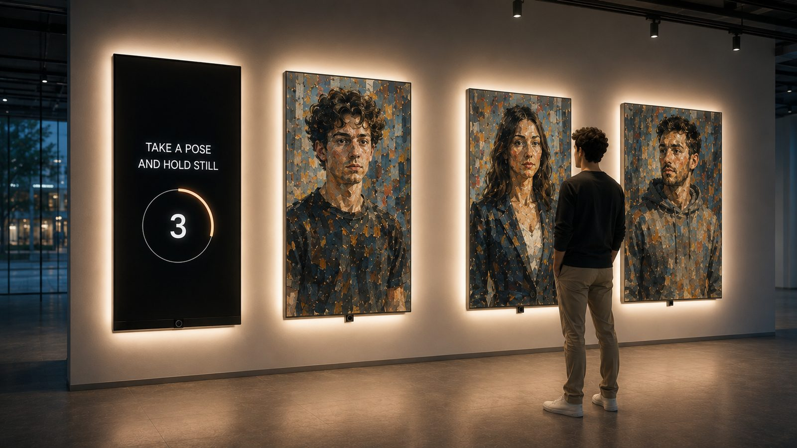
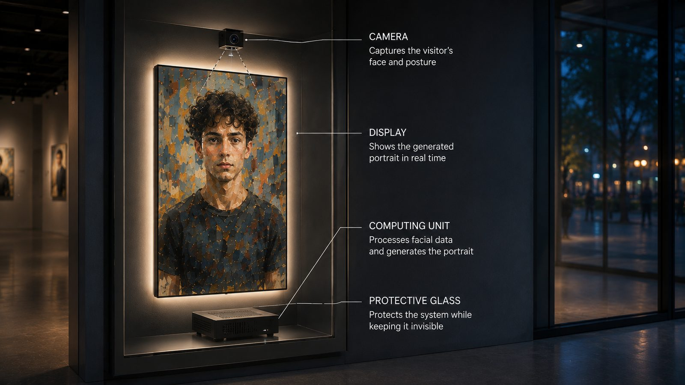

Museums
Visitor Becomes Part of the Exhibition
When an exhibition needs a personal takeaway that people will want to keep and show to others.
What it solves
- Turns a viewer into a participant.
- Creates a natural magnet — and a natural sharing point.
- Extends contact with the exhibition far beyond its walls.
How it works
A person looks into a mirror. A few seconds later the reflection becomes a portrait — in the style of an artist, a period or the exhibition's own visual language.
This artwork was made out of me, just now.
Mechanics
- Mirror screen
- Camera and generative processing
- Several artistic styles
- QR code or direct delivery of the result
- Queue and repeat-visit scenario
Why this way
Personalization grabs attention instantly: people find themselves inside the exhibit. The short wait builds anticipation, and the finished portrait becomes a tangible continuation of the visit — saved, sent to friends, posted.
Where it applies
Museums • art exhibitions • brand zones • festivals • learning spaces
What it can show
Styles of specific artists, periods, cultures, scientific themes, brands and events. Portraits can be made for couples, families and whole groups.

